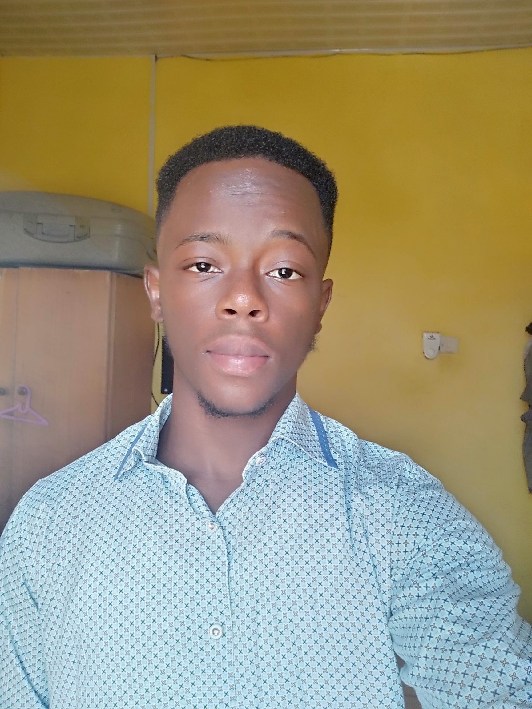

Paul Atinga Pegyin

Summary
I am a dedicated and hardworking young man with a strong passion for technology
Education
- Bsc. Computer Science - Regent University College of Science and Technology (2021 - 2024)
- WASSCE - Bolgatanga Senior High School (2017 - 2020)
- BECE - Anglican Junior High School (2015 - 2017)
Work Experience
Service Assistant - Smart Click Internet Cafe
- Assisted customers with their internet needs
- Printing and Photocopying
Intern - Upper East Regional Coordinating COuncil (MIS Office)
- Assisted Staff with I.T issues
- Monitored and ensured there was a stable network and internet connection
- Repaired some faulty hardwares such as laptops and desktops
Skills
- Microsoft Office Suit
- Graphic Designing
- Leadership and organisational skills
Awards and Certification
- BEIGE BANK STUDENTS EXCELLENCE AWARD (2017)
Others